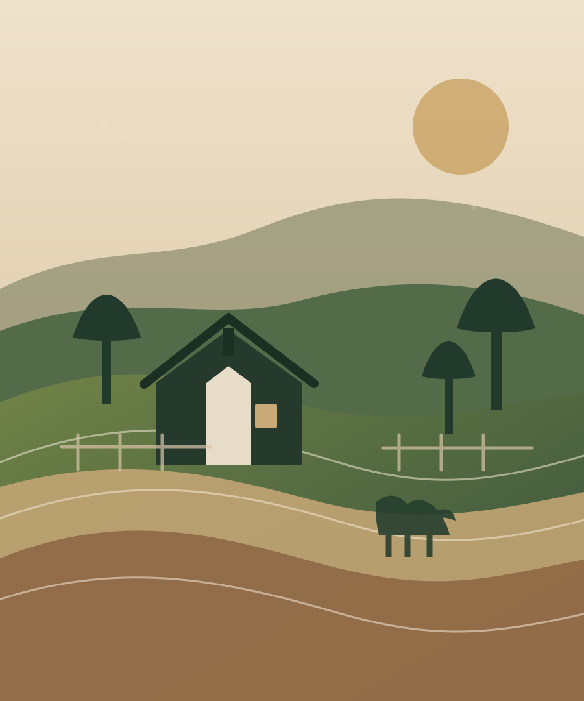

01Frequently promoted
1,000 sq yd
Compact farm plot
A practical entry scale seen repeatedly in social promotions for farmhouse and farm-use concepts.
Gadap Town · Karachi
Malik Cattle & Farmhouse promotes plots for farmhouse, cattle-farm and related rural uses in Gadap Town. Current inventory, price and visit details are confirmed directly by phone.
*Promotional sizes have varied over time; current availability must be confirmed.

Illustrative site artwork — official social media is the source for current property photos and reels.
Land options
Public promotions have shown multiple plot sizes. Instead of recycling old Eid or limited-time pricing, this site keeps the decision simple: pick the scale you need and call for current inventory.
1,000 sq yd
A practical entry scale seen repeatedly in social promotions for farmhouse and farm-use concepts.
2,000 sq yd
Extra space for a larger farmhouse layout, animal-use zone or open family recreation.
3,000 sq yd
This size has appeared in marketing material, but should be treated as availability-by-confirmation.
4,000 sq yd
For buyers planning more generous open space or a larger-scale farmhouse / cattle-farm concept.
Ready-farm concept
Past social promotions have included a ready-farm package concept with built elements such as a room, boundary, bathroom/kitchen and a sweet-water bore. Because those offers can change, the website does not present any old package as currently guaranteed.
Ask what is included todayPreviously advertised elements
What the land is promoted for
The Facebook positioning is about property. “Cattle” describes one potential use of the land—it does not mean cattle are being listed or sold on this website.
Private rural living, weekend use or a family retreat concept.
Open land promoted for buyers planning their own cattle-farm setup.
Recreation-focused land use featured in public social marketing.
Agricultural or orchard-style possibilities mentioned in promotional material.
Site visit
Public material places the project in Gadap Town. A precise entrance / map pin and appointment policy were not independently verified, so the responsible route is to call first and request current directions.
Call for directions ↗Before you visit
Ask what is genuinely available today.
Old social offers are not treated as live.
Get the latest pin / meeting point by phone.
Do not rely on unsupported website claims.
Practical FAQ
Where the public information is incomplete, the website says so and directs you to confirm by phone.
The supplied Facebook identity is being presented here as a property / land business. The public promotions researched focus on land intended for cattle farms, farmhouses and related uses—not animal inventory.
1,000, 2,000 and 4,000 sq yd sizes appear prominently in promotional material, with 3,000 sq yd also appearing in another graphic. Current stock should be confirmed by phone.
This website intentionally does not present old promotional prices as current. Call 0334 2764521 for the latest quote.
Public posts market the land to prospective buyers, but walk-in rules and an exact map pin were not verified. Call first to arrange directions and confirm visit details.
A WhatsApp line was not explicitly verified from the supplied research, so this site uses click-to-call rather than guessing.
No such claims are made here. Buyers should request current supporting documents and independently verify any legal, approval, ownership or possession claims before payment.
Current details change
Official social source
See the latest photos, reels and promotional posts at the source.
The public Facebook page is currently the strongest source for live project visuals and offer updates. This website deliberately does not copy old social prices into permanent “current” pricing.